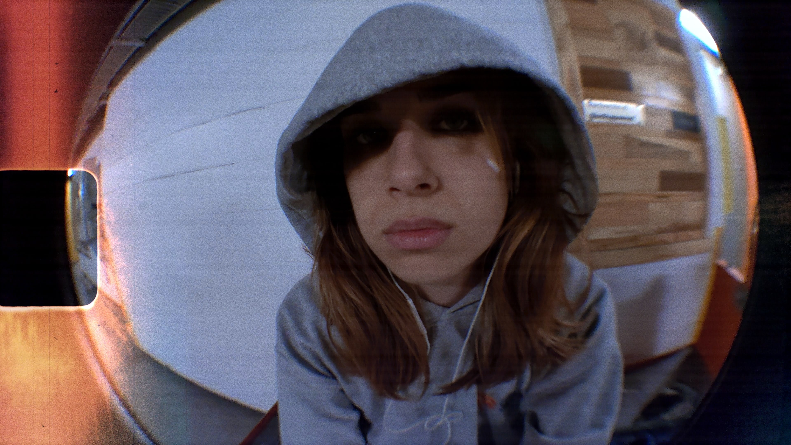
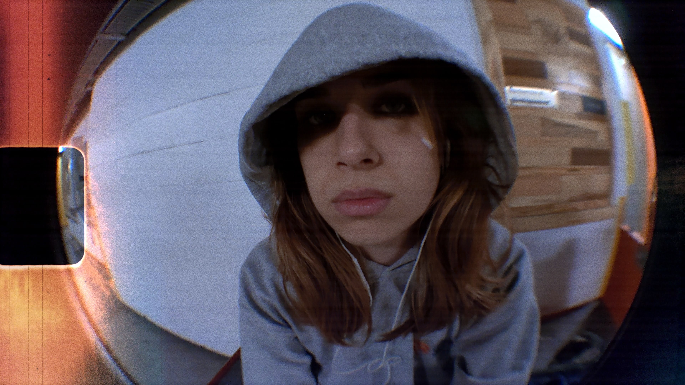

Synopsis :
L'histoire débute avec l’héroine jouant nerveusement avec un briquet, soulignant son malaise intérieur. Cherchant la quiétude, elle quitte son domicile pour se réfugier dans un parc. Dans ce lieu de calme apparent, elle allume une cigarette, déclenchant une série de visions émotionnelles intenses, de la peur à la joie débordante. La cigarette consumée symbolise sa libération momentanée de cette surcharge émotionnelle. Retournant s'allonger dans l'herbe du parc, l'héroïne semble trouver un bref répit au milieu de la tempête intérieure de ses émotions.
L'histoire débute avec l’héroine jouant nerveusement avec un briquet, soulignant son malaise intérieur. Cherchant la quiétude, elle quitte son domicile pour se réfugier dans un parc. Dans ce lieu de calme apparent, elle allume une cigarette, déclenchant une série de visions émotionnelles intenses, de la peur à la joie débordante. La cigarette consumée symbolise sa libération momentanée de cette surcharge émotionnelle. Retournant s'allonger dans l'herbe du parc, l'héroïne semble trouver un bref répit au milieu de la tempête intérieure de ses émotions.
Tourné pour Le Culte ➡, le teaser "Déluge" vise à dévoiler l'histoire d'une femme en quête de tranquillité au sein de ses tourments émotionnels. En quittant le tumulte de son domicile, elle expérimente ce qui peut être décrit comme un déluge d'émotions. Les effets spéciaux, la colorisation, et le montage ont été réalisés à l'aide de Davinci, tandis que d'autres manipulations ont été effectuées avec Photoshop. Le teaser promet une immersion visuelle captivante, mettant en avant le contraste entre la quête de paix intérieure de l'héroïne et l'orage émotionnel qui l'entoure.

 
